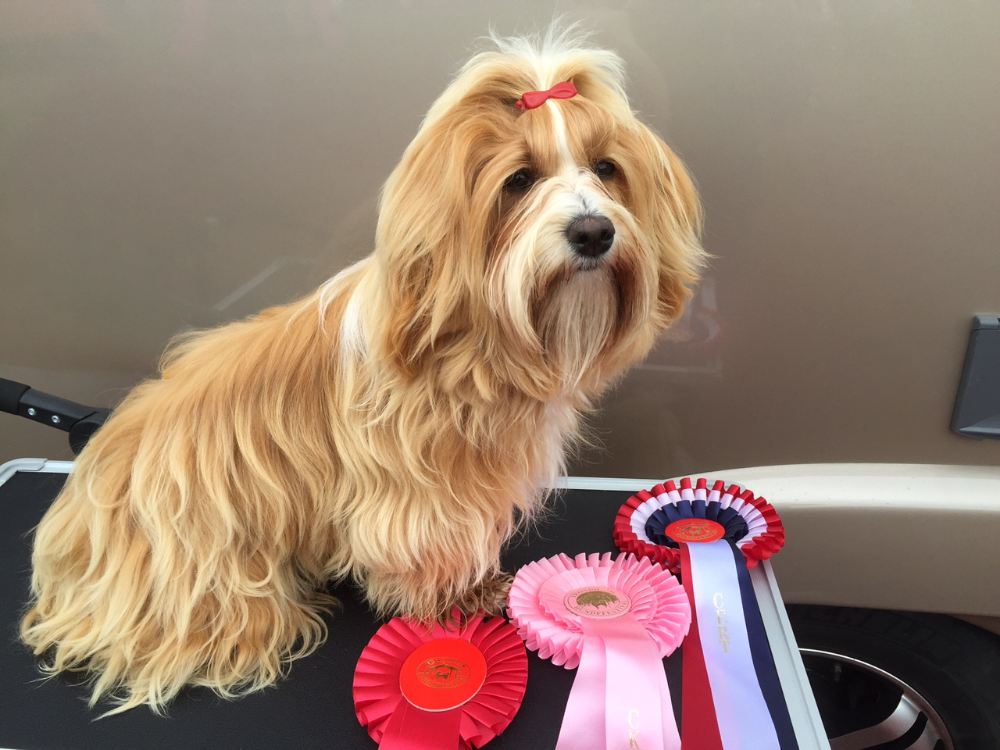

Om oss
Vi er en familie fra Ålesund som driver et lite oppdrett av Bichon Havanais.
Målet er å avle fram sunne, rasetypiske hunder som lever lenge, er snille og
sosiale og blir høyt verdsatte familemedlemmer. Vi har alltid vært glad i dyr
og vår første familiehund var en Golden Retriever. Jeg, «matmor» Birgitte,
fikk interessen for Bichon Havanais da vi fikk mulighet til å være fôrvert på
flotte Goldie. Hun lever nå som familiehund her hos oss.
Interessen for rasen var skapt og vi kjøpte vår andre havanais, Arianna,
to år etter at vi fikk Goldie. Sommeren 2018 hentet vi hjem lille Whitney.
Bichon havanaisene Goldie, Arianna og Whitney er fullverdige familiemedlemmer, og er med oss overalt.


Goldie, Arianna og Whitney bor inne hos oss som fullverdige familiemedlemmer.
Hundene er med oss overalt. Vi tilbringer en del tid på Teige i Årvika på Stadlandet.
Der er det ingen bånd eller gjerder, og hundene elsker friheten. Der kommer kennelnavnet
vårt, Teigestova, fra.
Hundene og jeg trener mye sammen. Utstillingstrening, litt hverdagslydighet og agility.
Og når jeg pakker bilen og fyller den med bagasje og utstillingsvognen, da vet «jentene»
at nå er det noe i gjære. Da er de klare for nye eventyr.